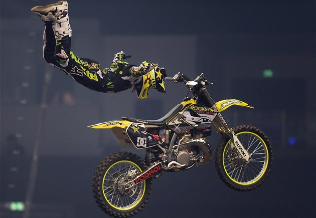

Freestyle Motocross (též FMX) je druh motocyklového sportu, přesněji motokrosu, kde závodníci provádějí se svými motocykly kaskadérské skoky a triky, aby získali od rozhodčích co nejlepší bodové ohodnocení. Jedná se o poměrně dost nebezpečný sport, při němž často dochází ke zranění soutěžících. V České republice se závody jezdí většinou v uzavřených halách, kde jsou uměle vytvořeny skoky. Motorky jsou speciálně upraveny, aby se daly ve vzduchu dobře chytit.
Zdroje:
Online. In: Wikipedia: the free encyclopedia. San Francisco (CA): Wikimedia Foundation, 2001-, 26.2.2024. Dostupné z: https://cs.wikipedia.org/wiki/Freestyle_Motocross [cit. 2024-06-03].